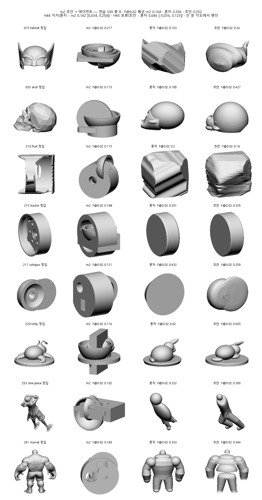

실험 m2_tr0292_h044_초안다듬기
목표 G1.2 view 모음 → 파츠별 CAD code(CadQuery · 그 전 「3 면도 → 파츠별 CAD」 · 지금 M2 는 위 · 앞 · 옆 고정 세 장만 받음 → 아무 각도 N 장으로 바꿀 것 · 11-20) · G1 첫 제품 — 피규어 · 메카 사진 여러 장 + 치수 → 숨은선 3 면도 + 파츠별 CAD · G0 임의의 이미지 → CAD 코드 · 빌린 가정 4: 정사영 · 시점앎 · 흰바탕 · 렌더화풍 · 갚는 계획: 진단 · 원화CAD짝 렌더(시점 앎) — 에이전트가 이기면 데이터 바퀴(에이전트가 고친 코드로 m2 를 배움) 카드 · 다음 실물 사진 · 각도 추정 · 목표 시험지 값: 안 잼 (!)
m2 자리에 맥락 없는 에이전트를 앉히면(같은 view 모음 · 그려보기 도구) m2 보다 실제 물체에 맞는 CAD 코드를 내나, 그리고 m2 초안에서 출발하면 빈 손보다 더 맞나?
| 가설 | 주장 | 결과 | 근거 |
|---|---|---|---|
| m2-H44 | 같은 view 모음에서 에이전트 혼자가 m2 보다 실제 물체에 훨씬 맞는 CAD 코드를 낸다 — m2 의 막힘은 입력 정보가 아니라 m2 가 배운 것이다 | 지지 | 8 개 F@0.02 혼자 0.306 대 m2 0.164 · 차 0.142 · 7/8 에서 혼자가 이김(015 helmet 만 m2 0.277 > 혼자 0.153 — 혼자가 두 실루엣 교차 덩어리를 냄) · m2 평균 0.164 ≈ 남의 정답 바닥 0.123 위 조금 |
| m2-H45 | m2 초안에서 출발한 에이전트가 빈 손 에이전트보다 실제 물체에 더 맞는 CAD 코드를 낸다 — 모델과 에이전트를 합치면 각자보다 낫다 | 보류 | 초안 0.352 대 혼자 0.306 · 차 0.046 · 5/8 에서 초안 팔이 높음 · 그러나 초안 팔 8 개 모두 「초안을 안 씀」(보고 — 그릇 · 컵 더미라 버리고 마지막 정규화 줄만 남김) → 바꾼 것(초안)이 실제로 들어가지 않음 · 차는 에이전트 흔들림 · 시간(초안 팔 +1.6 분 · +7 천 토큰) · 8 개라 구간이 넓음 · L3 는 판정 못 함 |
분석
한 줄로
물음: m2 자리에 에이전트(Claude 서브 에이전트)를 앉혀 m2와 같은 입력(m1 선 그림 둘 + 각도)을 주면, m2보다 실제 물체에 맞는 CAD 코드를 내나? 그리고 m2 초안에서 출발하면 빈손에서 시작한 것보다 더 맞나?
답: 에이전트가 m2의 거의 두 배였다(F@0.02 0.31 대 0.16, H44 지지). 다만 상대한 m2는 실제 물체를 한 번도 배운 적 없는 m2다. 초안 쪽은 판정을 못 했다(H45 보류). 초안을 받은 에이전트 8개가 모두 초안을 버렸다.
왜 이 실험을 했나
11-22 손 코드 시험에서는 개 한 마리를 놓고 비교했다. 선만 받은 에이전트가 0.29, m2가 0.12였다. 사용자가 두 가지를 물었다.
- 「니가 할 수 있으면 개발 안 해도 되는 거 아니야?」
- 「모델이랑 니가 만드는 걸 합쳐서 더 좋은 거를 만든다?」
우리 목표는 이미지 → view → CAD 코드다. 그래서 m2 자리에서 세 가지를 같은 물체 8개로 견줬다.
- m2만
- 에이전트 혼자
- m2 초안을 받은 에이전트
바꾼 것 하나
에이전트가 받는 출발점: 빈손이거나, m2 출력을 CadQuery 코드로 꺼낸 초안이거나.
나머지는 셋 다 같다.
- 입력: 같은 파일(m1 선 128² 둘 + 각도)
- 확인 도구: 같은 도구(자기 코드를 같은 두 각도로 그려 입력 선과 나란히 봄)
- 지시문: 초안 문단 하나만 다름
- 물체: 연습 300 중 씨앗 292로 뽑은 8개
결과

| m2 | 에이전트 혼자 | 초안 + 에이전트 | |
|---|---|---|---|
| F@0.02 평균 | 0.16 | 0.31 | 0.35 |
| F@0.01 평균 | 0.07 | 0.15 | 0.17 |
| 물체당 토큰 · 시간 | — | 약 8.9만 · 5분 | 약 9.6만 · 7분 |
- F@0.02: 두 표면 위 점의 짝이 크기의 2% 안에 드는 비율이다. 1이 완벽이다.
- 바닥값: 남의 물체 정답을 갖다 대면 0.12가 나온다. 이 자는 자 검사를 통과했다(같은 모양 1.0, 흔들수록 떨어짐).
판정은 이렇다.
- H44(혼자 − m2): 차 0.14, 구간 [0.03, 0.25]. 지지선 0.10을 넘어 지지다. 법칙 L1의 예측이 맞았다.
- H45(초안 − 혼자): 차 0.05, 구간 [−0.04, 0.12]. 지지선과 기각선 어디에도 못 미쳐 보류다.
왜 이렇게 나왔나
확인한 것
- m2 쪽: m2 평균 0.16은 남의 정답 바닥 0.12와 거의 같다. 그림의 m2 열도 물체마다 비슷한 회전체 더미다.
- 초안 쪽: 초안을 받은 에이전트 8개가 모두 「초안을 안 씀」이라고 보고했다. 남긴 것은 마지막 크기 맞춤 줄뿐이었다. 바꾼 것이 실제로는 안 들어갔으니, H45의 0.05 차이는 초안 덕이라고 볼 근거가 없다.
- 에이전트 쪽: 에이전트 16개 모두 빠진 정보로 같은 것을 적었다. 깊이, 두 그림 사이에서 어느 선이 같은 부위인지, 안 보이는 쪽이다.
- 혼자가 진 물체: 혼자가 m2에 진 물체는 015 helmet 하나다(0.15 대 0.28). 이 에이전트는 두 실루엣을 교차해 덩어리를 만들었다.
짐작 (아직 확인 안 함)
- 에이전트의 천장: 에이전트가 0.3 언저리에서 멈춘 것은 입력 정보 탓으로 보인다(법칙 L3 쪽). 개 시험에서 깊이를 더하면 0.64, 정답 렌더 8장이면 0.85였다.
- 알아본 물체: 에이전트가 알아본 물체(kirby 0.63, marvel 0.33~0.39)는 높았다. 이름과 모양이 다른 물체(octopus · fruit가 실제로는 기계 부품)는 낮았다.
한계
- 상대가 약하다: 상대한 m2는 생성기 부품만 배웠다. 실제 물체를 배운 m2(tr291)와 다시 견줘야 한다. 사용자 11-23 「m2 먼저 학습시키고 비교하는 게 먼저 아니야」. H44는 「안 배운 m2 대비」로만 읽는다.
- 물체가 적다: 8개, 에이전트는 팔마다 한 번씩만 돌렸다. 구간이 넓다.
- 규칙 위반: 에이전트 셋(033 · 217 · 291 초안 팔)이 보조 스크립트를 자기 폴더 밖에 썼다. 모델.py는 그 파일을 안 읽는다. 정답 파일은 아무도 안 봤다.
- 어휘가 다르다: 에이전트는 CadQuery 전체를 쓰고, m2는 몸 6개 · 7종류만 쓴다.
배운 것과 다음
지금 m2는 실제 물체에서 바닥 수준이고, 초안으로도 쓸모가 없다. 합치기를 시험하려면 m2부터 배워야 한다.
- tr291(실제 물체 실루엣으로 m2 배우기)을 판정한다. 모자라면 복셀 정답으로 한 번 더 배운다(사용자 「양자화」).
- 가장 잘 배운 m2로 같은 8개 · 같은 지시로 tr292를 다시 돌린다. 그때 H45(합치기)를 판정한다.
- 에이전트 결과를 학습 데이터로 쓰는 길(데이터 바퀴)은 그다음 카드로 둔다.